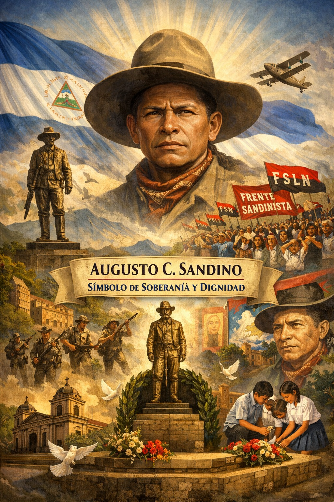

Universidad Nacional De Ingeniería
Universidad Nacional De Ingeniería
Homenajes, Distinciones y Memoria Colectiva Nacional e Internacional

El reconocimiento de Augusto C. Sandino en Nicaragua se consolidó progresivamente a lo largo del siglo XX. Aunque en vida fue perseguido y considerado enemigo por sectores del poder político tradicional, con el paso del tiempo su figura fue reivindicada como símbolo máximo de la defensa de la soberanía nacional. Su resistencia frente a la intervención extranjera y su firme postura lo posicionaron como un referente histórico fundamental y un héroe indiscutible.
A nivel oficial, la figura de Sandino ha sido incorporada en discursos de Estado, programas educativos y conmemoraciones cívicas. Su imagen aparece en monumentos, plazas, murales y espacios públicos. Su representación icónica con sombrero alado y postura firme se convirtió en símbolo visual de resistencia y parte integral del patrimonio de la nación.
El legado de Sandino adquirió una dimensión política trascendente cuando el Frente Sandinista de Liberación Nacional adoptó su nombre e ideales como base de su doctrina. Más allá de posturas partidarias, su nombre continúa asociado universalmente a los valores de soberanía, autodeterminación y justicia social.
Fuera de Nicaragua, Sandino es reconocido como una de las primeras grandes figuras latinoamericanas que lideraron una resistencia exitosa contra la intervención militar estadounidense. Su lucha fue objeto de admiración continental e inspiró a movimientos antiimperialistas en todo el mundo.
En el ámbito académico, historiadores e investigadores continúan analizando su pensamiento político, estrategia militar y su impacto en la construcción de la identidad nacional. Sus escritos y proclamas son objeto de cátedras y debates universitarios sobre soberanía y relaciones internacionales.
Tras su trágico asesinato en 1934, su figura se convirtió en un mito de sacrificio y dignidad. Ha sido fuente de inspiración para poetas, músicos, muralistas y escultores. Sandino representa la dignidad frente a la adversidad y la defensa innegociable de la patria.